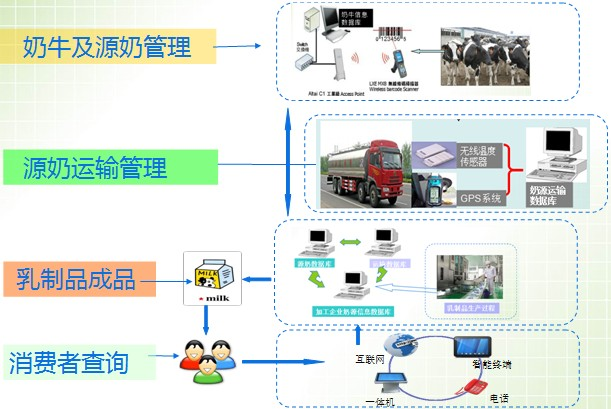

安盛乳品安全管理系统
安盛乳品安全管理系统是河南安盛科技股份有限公司专门针对奶制品、乳制品行业的企业研发的产品信息追溯行业应用软件，它使用开源的JAVA语言进行开发，采用先进的B/S架构，使客户端零安装，有网络就能使用系统。
软件开发目标：企业使用更省心，产品宣传更有效！
一、乳制品追溯流程：

二、餐饮服务追溯实施方案：
因为乳制品本身有受温度影响大，易变质等特点，所以要管好奶牛、
源奶、源奶运输、乳制品加工、流通消费等主要环节。
一、奶牛及源奶的管理
- 奶牛养殖企业通过耳标，对奶牛的主要信息：包括养殖者、饲养生产加工、奶牛饲养时间、奶牛用药情况、防疫\疾病控制
进行记录，保存到奶牛信息数据库。
- 当奶牛挤出牛奶进入奶缸后，每个奶缸也对应地生成一个标签，记录挤乳时间、奶缸温度、生乳品质等信息，并这些信息与奶牛关联后保存入库，用于挤奶和生乳运输的管理。

二、源奶运输管理
- 运输时每一批次的运输都有专属的运输标识代码，并通过GPS定位技术和温度传感技术对运输车辆的路线、运输时间及运输途中源奶的温度信息进行实时的监控，并将这些运输信息传入奶源运输数据库。

三、乳制品加工
- 乳品加工企业与原料生产企业通过数据接口对接对采购的牛奶进行信息确认；在生产加工过程中采集信息(企业基本信息、原料加工人员、加工时间、加工流程以及有无超量、超范围使用添加剂等),并传入乳制品加工企业数据库。每一批次的成品都有相对应的标识代码。产品完成生产后，将整个过程的数据进行整合，并将完成的信息以溯源条码的形式来进行标识，上传到溯源平台。
- 流通中通过进货销货电子台账对产品进行跟踪，最终形成完整的溯源信息供消费者查询。